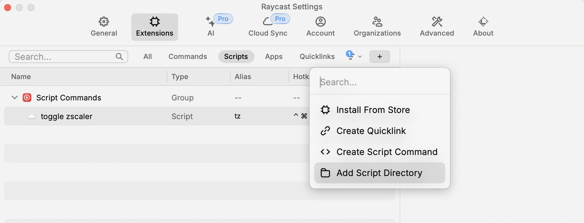

Automating Zscaler Connectivity on macOS
Introduction
Zscaler is a cloud-based security service that provides secure internet access via VPN. Unfortunately, Zscaler does not provide a command-line interface to connect to the VPN. We can't use AppleScript to automate the connectivity as well.
Automating Zscaler Connectivity
Once Zscaler is installed on macOS, if we search for LaunchAgents & LaunchDaemons directories, we can find the Zscaler plist files.
$ sudo find /Library/LaunchAgents -name '*zscaler*' /Library/LaunchAgents/com.zscaler.tray.plist $ sudo find /Library/LaunchDaemons -name '*zscaler*' /Library/LaunchDaemons/com.zscaler.service.plist /Library/LaunchDaemons/com.zscaler.tunnel.plist /Library/LaunchDaemons/com.zscaler.UPMServiceController.plist
To connect to Zscaler, we can load these services.
#!/bin/bash /usr/bin/open -a /Applications/Zscaler/Zscaler.app --hide sudo find /Library/LaunchAgents -name '*zscaler*' -exec launchctl load {} \; sudo find /Library/LaunchDaemons -name '*zscaler*' -exec launchctl load {} \;
To disconnect from Zscaler, we can unload all of them.
#!/bin/bash sudo find /Library/LaunchAgents -name '*zscaler*' -exec launchctl unload {} \; sudo find /Library/LaunchDaemons -name '*zscaler*' -exec launchctl unload {} \;
To automatically toggle the connectivity, we can create a shell script.
#!/bin/bash if [[ $(pgrep -x Zscaler) ]]; then echo "Disconnecting from Zscaler" sudo find /Library/LaunchAgents -name '*zscaler*' -exec launchctl unload {} \; sudo find /Library/LaunchDaemons -name '*zscaler*' -exec launchctl unload {} \; else echo "Connecting to Zscaler" /usr/bin/open -a /Applications/Zscaler/Zscaler.app --hide sudo find /Library/LaunchAgents -name '*zscaler*' -exec launchctl load {} \; sudo find /Library/LaunchDaemons -name '*zscaler*' -exec launchctl load {} \; fi
Raycast is an alternative to default spotlight search on macOS. We can create a script to toggle connectivity to Zscaler.
#!/bin/bash # Required parameters: # @raycast.schemaVersion 1 # @raycast.title toggle zscaler # @raycast.mode silent # Optional parameters: # @raycast.icon ☁️ # Documentation: # @raycast.author chillaranand # @raycast.authorURL https://avilpage.com/ if [[ $(pgrep -x Zscaler) ]]; then echo "Disconnecting from Zscaler" sudo find /Library/LaunchAgents -name '*zscaler*' -exec launchctl unload {} \; sudo find /Library/LaunchDaemons -name '*zscaler*' -exec launchctl unload {} \; else echo "Connecting to Zscaler" /usr/bin/open -a /Applications/Zscaler/Zscaler.app --hide sudo find /Library/LaunchAgents -name '*zscaler*' -exec launchctl load {} \; sudo find /Library/LaunchDaemons -name '*zscaler*' -exec launchctl load {} \; fi
Save this script to a folder. From Raycast Settings -> Extensions -> Add Script Directory, we can select this folder, and the script will be available in Raycast.

We can assign a shortcut key to the script for quick access.

Conclusion
Even though Zscaler does not provide a command-line interface, we can automate the connectivity using the above scripts.